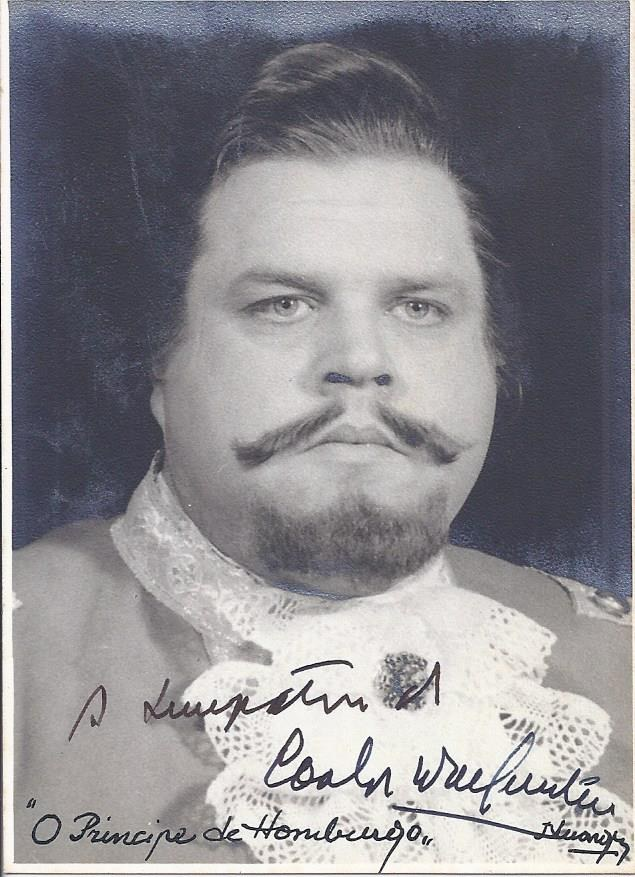

Teatro
Espectáculos em que participou como actor, encenador, autor, adaptador e tradutor.
Lista cronológica dos espectáculos registados na CETbase (Centro de Estudos de Teatro, Universidade de Lisboa). Datas, companhias e funções seguem a base de dados e vão sendo confrontadas com os programas do arquivo familiar; os cartazes e programas que se juntarem serão aqui acrescentados.
Fonte: CETbase, ficha de Carlos Wallenstein (consultada em Outubro de 2026). Quando a ficha não indica companhia, o espaço fica por preencher. Para a nota sobre O Impostor Geral, ver também a Cronologia.

1949–1953
| Data | Espectáculo | Companhia | Função |
|---|---|---|---|
| 9 jun. 1949 | A escola de maridos | Os Companheiros do Pátio das Comédias | Actor: Aristeu |
| 11 nov. 1949 | Filipe II | Os Companheiros do Pátio das Comédias | Actor |
| 6 jun. 1950 | 16.º Espectáculo essencialista (Contrabando; O menino dos olhos verdes; É melhor não experimentar; A sogra de Luís XVI) | Teatro-Estúdio do Salitre | Actor: Joseph |
| 6 jul. 1951 | O Dr. Juiz | — | Actor |
| 1 dez. 1951 | O tribuno | — | Actor |
| 23 out. 1952 | Milagre da rua | Companhia Maria Lalande | Actor: Manuel Grande |
| dez. 1952 | Já daqui não saio | Companhia Maria Lalande | Actor: Júlio |
| 7 abr. 1953 | A menina tonta | Companhia Rey Colaço-Robles Monteiro | Actor: Feniso |
| 9 dez. 1953 | O conde barão | Companhia de Comédias Vasco Santana | Actor: Baptista |
1954–1959
| Data | Espectáculo | Companhia | Função |
|---|---|---|---|
| 21 ago. 1954 | Perdeu-se um marido | Empresa Vasco Morgado | Actor: Médico |
| 5 nov. 1954 | A lua viu tudo | Empresa Vasco Morgado | Actor |
| 26 nov. 1954 | Casei com um anjo | Empresa Vasco Morgado | Actor: Banqueiro |
| jul. 1955 | Comédia das verdades e das mentiras | Teatro do Povo | Actor: Bruno |
| 13 ago. 1955 | São João Baptista | Teatro do Povo | Actor |
| 14 ago. 1955 | Rei Lear | Teatro do Povo | Actor |
| 15 mar. 1956 | As velhacarias de Scapin | Companhia Rey Colaço-Robles Monteiro | Actor: Silvestre |
| 31 mar. 1956 | Santa Joana | Companhia Rey Colaço-Robles Monteiro | Actor: O Carrasco, O Capitão La Hire |
| jul. 1956 | Rei Lear | Teatro Nacional Popular | Actor |
| jul. 1956 | São João Baptista | Teatro Nacional Popular | Actor |
| 24 dez. 1956 | A 8.ª mulher do milionário | — | Autor do texto |
| 22 fev. 1957 | O revizor | Companhia Rey Colaço-Robles Monteiro | Actor: Michka, Polícia de Petersburgo |
| 16 mar. 1957 | Quando elas se encontram | — | Autor do texto |
| 6 abr. 1957 | Castro | Companhia Rey Colaço-Robles Monteiro | Actor: Pêro Coelho |
| 24 abr. 1957 | Dona Inês de Portugal | Companhia Rey Colaço-Robles Monteiro | Actor: Mestre de Campo |
| jul. 1957 | Comédia das verdades e das mentiras | Teatro Nacional Popular | Actor |
| 27 nov. 1957 | Noite de reis | Teatro Nacional Popular | Actor: Capitão de Navios |
| 23 jan. 1958 | Um dia de vida | Teatro Nacional Popular | Actor: O Sr. Doutor |
| 19 mar. 1958 | Um serão nas Laranjeiras | Teatro Nacional Popular | Actor: Monsenhor |
| jun. 1958 | Auto de Santo António | Teatro Nacional Popular | Actor |
| jun. 1958 | O tio Simplício | Teatro Nacional Popular | Actor |
| 9 jan. 1959 | Um homem só | Teatro Nacional Popular | Actor: Tomás |
| 24 out. 1959 | Lucy Crown | Teatro Nacional Popular | Actor: Dr. Patterson |
| 12 dez. 1959 | Doze homens fechados | Teatro Nacional Popular | Actor |
1960–1969
| Data | Espectáculo | Companhia | Função |
|---|---|---|---|
| 8 jan. 1960 | A sapateira prodigiosa | Companhia Rey Colaço-Robles Monteiro | Autor do texto |
| 6 fev. 1960 | O amor, o dinheiro e a morte | Teatro Nacional Popular | Actor: O Gordo |
| 20 abr. 1960 | Leonor Teles | Teatro Nacional Popular | Actor: João Afonso Teles |
| 21 jun. 1960 | A ratoeira | — | Encenação |
| 10 ago. 1960 | Bobosse | Empresa Vasco Morgado | Actor |
| 10 dez. 1960 | Lutar até de madrugada | Teatro D'Arte de Lisboa | Actor: Substituto do Notário; encenação |
| 21 dez. 1961 | O Príncipe de Homburgo | Companhia Nacional de Teatro | Actor: Capitão Sparren; luminotécnico |
| 1962 | A mantilha de Beatriz | Companhia de Teatro Popular de Lisboa | Autor do texto |
| 1 mar. 1962 | Tirésias | Companhia Nacional de Teatro | Actor: Lacuf; luminotécnico |
| 9 mar. 1962 | O pai | Companhia Nacional de Teatro | Actor: Médico; luminotécnico |
| 21 abr. 1962 | A rapariga do bar | — | Luminotécnico |
| 8 jun. 1962 | Nunca se sabe | Companhia Nacional de Teatro | Actor: Mc Comas; luminotécnico |
| jul. 1962 | A ferida luminosa | — | Actor |
| 15 fev. 1963 | O Sr. Biederman e os incendiários | Companhia Rey Colaço-Robles Monteiro | Actor: Schmitz |
| 10 jan. 1965 | O impostor geral | Companhia Raul Solnado (Teatro Villaret) | Adaptação |
| 24 jul. 1965 | Silva vicentina | — | Actor |
1970–1979
| Data | Espectáculo | Companhia | Função |
|---|---|---|---|
| jun. 1970 | Auto da Índia | Teatro Experimental de Cascais | Actor |
| jul. 1970 | Auto da barca do Inferno | Teatro Experimental de Cascais | Actor |
| 10 abr. 1971 | Só as borboletas são livres | — | Autor do texto |
| 25 jan. 1972 | O Tartufo | TEBO – Teatro de Bolso | Autor do texto |
| 30 jan. 1973 | Adriano VII | Companhia Rey Colaço-Robles Monteiro | Actor: Cardeal Ragna, Secretário de Estado |
| 3 mar. 1973 | A mantilha de Beatriz | — | Autor do texto (programa) |
| 24 jul. 1974 | Homem-escravo ou animal? | Bloco – Companhia de Teatro Livre | Actor: Prof. Kreps; texto português (de Vercors) |
| mar. 1976 | A mãe | — | Encenação |
| 30 jul. 1976 | O Tartufo | — | Adaptação |
| 31 mar. 1977 | O Sr. Benquisto e os incendiários | — | Encenação |
| 23 jun. 1978 | Jesus Cristo em Lisboa | — | Encenação; programa com texto seu |
| 7 ago. 1979 | A mãe, comédia repugnante do filho da mãe | Teatro Experimental de Cascais | Actor: Tatesu |
1980–1990
| Data | Espectáculo | Companhia | Função |
|---|---|---|---|
| 16 abr. 1982 | Portugal, anos quarenta | — | Ideia |
| 24 set. 1983 | Annie | Empresa Sérgio de Azevedo | Actor: Oliver Warbucks |
| 24 abr. 1984 | Marat – perseguição e assassinato de Jean-Paul Marat, representados pelos internados do asilo de Charenton, sob a direcção do Marquês de Sade | Comuna – Teatro de Pesquisa | Actor: Marquês de Sade |
| 30 out. 1984 | O actor na corda bamba | — | Programa com texto seu |
| 14 mai. 1986 | Frei Luís de Sousa | — | Actor |
| 13 nov. 1989 | Os pais terríveis | — | Autor do texto; tradução |
Depois de 1990
| Data | Espectáculo | Companhia | Função |
|---|---|---|---|
| 12 mai. 2005 | O amor das três laranjas | ACT – Escola de Actores | Autor do texto |
| 3 mar. 2007 | A linha da viagem – um conto coreográfico em terras de Nadir | — | Autor do texto |
Algumas fontes divergem em pormenores (por exemplo, o numeral do espectáculo do Teatro-Estúdio do Salitre, em 1950). Se tiver um programa, um cartaz ou uma fotografia de algum destes espectáculos, escreva-nos.